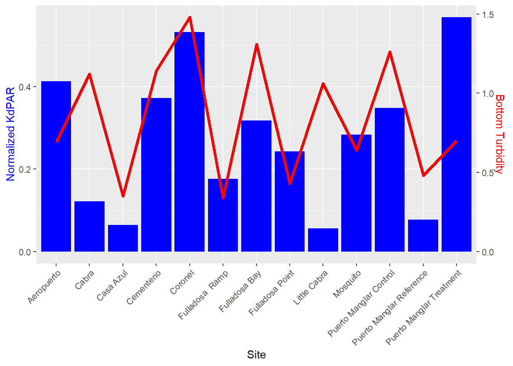

Nearshore-Field-Data-Checks
Descriptive Statistics for Latest Sampling Event
| Param | n | mean | sd | min | median | max |
|---|---|---|---|---|---|---|
| Surf.Sal | 13 | 36.5454 | 0.2519 | 35.980 | 36.600 | 36.960 |
| Surf.DO | 13 | 6.6477 | 0.4403 | 5.730 | 6.640 | 7.630 |
| Surf.Turb | 13 | 6.6285 | 2.0879 | 2.770 | 6.370 | 11.030 |
| Surf.Chl.red | 13 | 0.1631 | 0.3450 | -0.850 | 0.220 | 0.510 |
| Surf.Temp | 13 | 27.2677 | 0.5164 | 26.790 | 27.070 | 28.160 |
| Surf.DO.Sat | 13 | 105.7923 | 7.7963 | 90.500 | 105.100 | 123.500 |
| Surf.pH | 13 | 8.2446 | 0.0407 | 8.140 | 8.250 | 8.300 |
| Surf.Chla | 13 | 0.2277 | 0.6652 | -0.180 | 0.000 | 2.280 |
| Surf.CDOM | 13 | 1.2708 | 0.3714 | 0.900 | 1.130 | 2.250 |
| Bot.Temp | 13 | 27.1900 | 0.4664 | 26.770 | 27.030 | 28.160 |
| Bot.Sal | 13 | 36.5838 | 0.2261 | 36.130 | 36.630 | 36.970 |
| Bot.DO | 13 | 6.7977 | 0.6274 | 5.480 | 6.920 | 7.720 |
| Bot.Turb | 13 | 6.2046 | 3.1581 | 2.830 | 5.550 | 15.370 |
| Bot.Chl.red | 13 | 0.1731 | 0.2566 | -0.370 | 0.130 | 0.830 |
| Bot.DO.sat | 13 | 108.0923 | 10.6599 | 86.700 | 109.900 | 124.900 |
| Bot.pH | 13 | 8.2477 | 0.0370 | 8.160 | 8.250 | 8.310 |
| Bot.Chla | 13 | -0.0462 | 0.1487 | -0.210 | -0.100 | 0.290 |
| Bot.CDOM | 13 | 1.5869 | 0.7905 | 0.860 | 1.270 | 3.660 |
| Surf.Lower.Apogee | 13 | 846.1138 | 360.4812 | 192.026 | 845.933 | 1485.615 |
| Surf.Upper.Apogee | 13 | 1752.8793 | 490.4362 | 712.261 | 1937.990 | 2456.168 |
| Bot.Lower.Apogee | 13 | 792.9968 | 307.3985 | 270.872 | 827.859 | 1390.423 |
| Bot.Upper.Apogee | 13 | 1730.4995 | 482.9483 | 693.321 | 1876.336 | 2251.272 |
KdPar Figure
Figure 1 Light Attenuation Coefficient (Kd) by Site with Bottom Turbidity Line Overlay.
